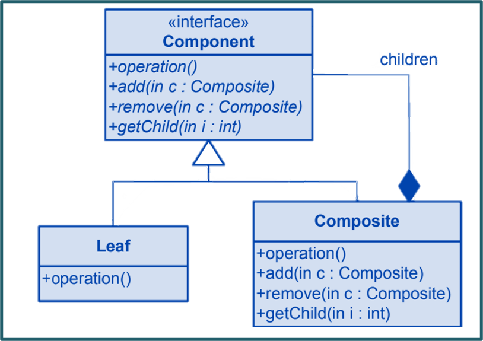

The Composite pattern is a design pattern in software engineering that lets you compose objects into tree structures to represent part-whole hierarchies. It allows clients to treat individual objects and compositions of objects uniformly. The pattern is used when you have a structure that can be represented as a hierarchical tree and you want to apply the same operations to individual objects and their compositions.Learn more.
Key Characteristics
Key characteristics of the Composite pattern include:
Component: The pattern defines an abstract base class (or interface) called the "Component" that declares the common interface for all concrete elements in the composition.
Leaf: "Leaf" components represent individual objects that have no children in the composition hierarchy.
Composite: "Composite" components represent containers that can hold other components, including both leaves and other composites.
Recursive Structure: The composition forms a recursive structure, where both individual objects and compositions can have children.
Uniformity: The pattern allows clients to treat single objects and compositions of objects uniformly by using the same interface for both.
Class Diagram

Example
A real-world example of the Composite pattern can be found in graphical user interface (GUI) frameworks. Imagine you're building a GUI framework that consists of various graphical elements such as windows, buttons, and panels. These elements can be arranged hierarchically to create complex layouts.